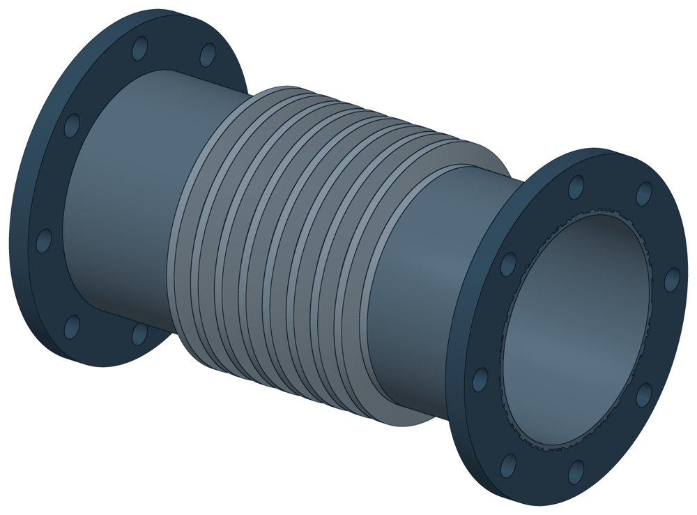

Компенсатор сильфонный КСОФ
Dн 57–1220 мм.

- Диаметр трубы Dн
- 57–1220 мм
- Исполнений
- 285
- Цена в магазине
- 6 045–838 087 ₽
- 3D-модели
- у всех исполнений (условные: общий вид по габаритам)
Таблица исполнений КСОФ
| Обозначение | Код ПРОМБУРГ | Исп. | Думм | Рукгс/см² | Ходмм | Lмм | Наличие | Цена₽ | 3D |
|---|---|---|---|---|---|---|---|---|---|
| КСОФ 50-16-60, L 365, НЖ | ПБ-КСОФ-0050-7 | НЖ | 50 | 16 | 60 | 365 | под заказ | 6 396 | 3D |
| КСОФ 50-16-60, L 145, НЖ | ПБ-КСОФ-0050-8 | НЖ | 50 | 16 | 60 | 145 | под заказ | 6 045 | 3D |
| КСОФ 50-16-80, L 385, НЖ | ПБ-КСОФ-0050-9 | НЖ | 50 | 16 | 80 | 385 | под заказ | 8 736 | 3D |
| КСОФ 50-16-80, L 225, НЖ | ПБ-КСОФ-0050-10 | НЖ | 50 | 16 | 80 | 225 | под заказ | 8 393 | 3D |
| КСОФ 65-16-60, L 375, НЖ | ПБ-КСОФ-0065-4 | НЖ | 65 | 16 | 60 | 375 | под заказ | 8 229 | 3D |
| КСОФ 65-16-60, L 155, НЖ | ПБ-КСОФ-0065-5 | НЖ | 65 | 16 | 60 | 155 | под заказ | 7 769 | 3D |
| КСОФ 65-16-80, L 385, НЖ | ПБ-КСОФ-0065-6 | НЖ | 65 | 16 | 80 | 385 | под заказ | 10 780 | 3D |
| КСОФ 65-16-80, L 210, НЖ | ПБ-КСОФ-0065-7 | НЖ | 65 | 16 | 80 | 210 | под заказ | 10 319 | 3D |
| КСОФ 80-16-90, L 395, НЖ | ПБ-КСОФ-0080-5 | НЖ | 80 | 16 | 90 | 395 | под заказ | 11 427 | 3D |
| КСОФ 80-16-90, L 195, НЖ | ПБ-КСОФ-0080-6 | НЖ | 80 | 16 | 90 | 195 | под заказ | 10 702 | 3D |
| КСОФ 100-16-60, L 360, НЖ | ПБ-КСОФ-0100-5 | НЖ | 100 | 16 | 60 | 360 | под заказ | 10 842 | 3D |
| КСОФ 100-16-60, L 140, НЖ | ПБ-КСОФ-0100-6 | НЖ | 100 | 16 | 60 | 140 | под заказ | 10 054 | 3D |
| КСОФ 100-16-100, L 400, НЖ | ПБ-КСОФ-0100-7 | НЖ | 100 | 16 | 100 | 400 | под заказ | 11 411 | 3D |
| КСОФ 100-16-100, L 180, НЖ | ПБ-КСОФ-0100-8 | НЖ | 100 | 16 | 100 | 180 | под заказ | 10 624 | 3D |
| КСОФ 100-16-120, L 450 | ПБ-КСОФ-0100-9 | — | 100 | 16 | 120 | 450 | под заказ | 14 500 | 3D |
| КСОФ 100-16-120, L 450, НЖ | ПБ-КСОФ-0100-10 | НЖ | 100 | 16 | 120 | 450 | под заказ | 16 271 | 3D |
| КСОФ 100-16-120, L 230 | ПБ-КСОФ-0100-11 | — | 100 | 16 | 120 | 230 | под заказ | 13 712 | 3D |
| КСОФ 100-16-120, L 230, НЖ | ПБ-КСОФ-0100-12 | НЖ | 100 | 16 | 120 | 230 | под заказ | 15 483 | 3D |
| КСОФ 125-16-60, L 360 | ПБ-КСОФ-0125-4 | — | 125 | 16 | 60 | 360 | под заказ | 15 007 | 3D |
| КСОФ 125-16-60, L 360, НЖ | ПБ-КСОФ-0125-5 | НЖ | 125 | 16 | 60 | 360 | под заказ | 15 631 | 3D |
| КСОФ 125-16-60, L 140 | ПБ-КСОФ-0125-6 | — | 125 | 16 | 60 | 140 | под заказ | 14 040 | 3D |
| КСОФ 125-16-60, L 140, НЖ | ПБ-КСОФ-0125-7 | НЖ | 125 | 16 | 60 | 140 | под заказ | 14 656 | 3D |
| КСОФ 125-16-100, L 410 | ПБ-КСОФ-0125-8 | — | 125 | 16 | 100 | 410 | под заказ | 15 803 | 3D |
| КСОФ 125-16-100, L 410, НЖ | ПБ-КСОФ-0125-9 | НЖ | 125 | 16 | 100 | 410 | под заказ | 16 692 | 3D |
| КСОФ 125-16-100, L 190 | ПБ-КСОФ-0125-10 | — | 125 | 16 | 100 | 190 | под заказ | 14 836 | 3D |
| КСОФ 125-16-100, L 190, НЖ | ПБ-КСОФ-0125-11 | НЖ | 125 | 16 | 100 | 190 | под заказ | 15 717 | 3D |
| КСОФ 125-16-130, L 480 | ПБ-КСОФ-0125-12 | — | 125 | 16 | 130 | 480 | под заказ | 18 775 | 3D |
| КСОФ 125-16-130, L 480, НЖ | ПБ-КСОФ-0125-13 | НЖ | 125 | 16 | 130 | 480 | под заказ | 22 090 | 3D |
| КСОФ 125-16-130, L 460 | ПБ-КСОФ-0125-14 | — | 125 | 16 | 130 | 460 | под заказ | 17 090 | 3D |
| КСОФ 125-16-130, L 460, НЖ | ПБ-КСОФ-0125-15 | НЖ | 125 | 16 | 130 | 460 | под заказ | 18 416 | 3D |
| КСОФ 125-16-130, L 260 | ПБ-КСОФ-0125-16 | — | 125 | 16 | 130 | 260 | под заказ | 17 800 | 3D |
| КСОФ 125-16-130, L 260, НЖ | ПБ-КСОФ-0125-17 | НЖ | 125 | 16 | 130 | 260 | под заказ | 21 115 | 3D |
| КСОФ 125-16-130, L 240 | ПБ-КСОФ-0125-18 | — | 125 | 16 | 130 | 240 | под заказ | 16 123 | 3D |
| КСОФ 125-16-130, L 240, НЖ | ПБ-КСОФ-0125-19 | НЖ | 125 | 16 | 130 | 240 | под заказ | 17 449 | 3D |
| КСОФ 150-16-60, L 365 | ПБ-КСОФ-0150-5 | — | 150 | 16 | 60 | 365 | под заказ | 18 611 | 3D |
| КСОФ 150-16-60, L 365, НЖ | ПБ-КСОФ-0150-6 | НЖ | 150 | 16 | 60 | 365 | под заказ | 19 344 | 3D |
| КСОФ 150-16-60, L 145 | ПБ-КСОФ-0150-7 | — | 150 | 16 | 60 | 145 | под заказ | 17 129 | 3D |
| КСОФ 150-16-60, L 145, НЖ | ПБ-КСОФ-0150-8 | НЖ | 150 | 16 | 60 | 145 | под заказ | 17 862 | 3D |
| КСОФ 150-16-100, L 420 | ПБ-КСОФ-0150-9 | — | 150 | 16 | 100 | 420 | под заказ | 19 555 | 3D |
| КСОФ 150-16-100, L 420, НЖ | ПБ-КСОФ-0150-10 | НЖ | 150 | 16 | 100 | 420 | под заказ | 20 600 | 3D |
| КСОФ 150-16-100, L 200 | ПБ-КСОФ-0150-11 | — | 150 | 16 | 100 | 200 | под заказ | 18 080 | 3D |
| КСОФ 150-16-100, L 200, НЖ | ПБ-КСОФ-0150-12 | НЖ | 150 | 16 | 100 | 200 | под заказ | 19 126 | 3D |
| КСОФ 150-16-150, L 475 | ПБ-КСОФ-0150-13 | — | 150 | 16 | 150 | 475 | под заказ | 23 431 | 3D |
| КСОФ 150-16-150, L 475, НЖ | ПБ-КСОФ-0150-14 | НЖ | 150 | 16 | 150 | 475 | под заказ | 24 999 | 3D |
| КСОФ 150-16-150, L 255 | ПБ-КСОФ-0150-15 | — | 150 | 16 | 150 | 255 | под заказ | 21 957 | 3D |
| КСОФ 150-16-150, L 255, НЖ | ПБ-КСОФ-0150-16 | НЖ | 150 | 16 | 150 | 255 | под заказ | 23 517 | 3D |
| КСОФ 200-16-80, L 395 | ПБ-КСОФ-0200-5 | — | 200 | 16 | 80 | 395 | под заказ | 27 924 | 3D |
| КСОФ 200-16-80, L 395, НЖ | ПБ-КСОФ-0200-6 | НЖ | 200 | 16 | 80 | 395 | под заказ | 29 648 | 3D |
| КСОФ 200-16-80, L 175 | ПБ-КСОФ-0200-7 | — | 200 | 16 | 80 | 175 | под заказ | 25 295 | 3D |
| КСОФ 200-16-80, L 175, НЖ | ПБ-КСОФ-0200-8 | НЖ | 200 | 16 | 80 | 175 | под заказ | 27 019 | 3D |
| КСОФ 200-16-100, L 415 | ПБ-КСОФ-0200-9 | — | 200 | 16 | 100 | 415 | под заказ | 28 345 | 3D |
| КСОФ 200-16-100, L 415, НЖ | ПБ-КСОФ-0200-10 | НЖ | 200 | 16 | 100 | 415 | под заказ | 30 069 | 3D |
| КСОФ 200-16-100, L 195 | ПБ-КСОФ-0200-11 | — | 200 | 16 | 100 | 195 | под заказ | 25 717 | 3D |
| КСОФ 200-16-100, L 195, НЖ | ПБ-КСОФ-0200-12 | НЖ | 200 | 16 | 100 | 195 | под заказ | 27 440 | 3D |
| КСОФ 200-16-160, L 520 | ПБ-КСОФ-0200-13 | — | 200 | 16 | 160 | 520 | под заказ | 35 467 | 3D |
| КСОФ 200-16-160, L 520, НЖ | ПБ-КСОФ-0200-14 | НЖ | 200 | 16 | 160 | 520 | под заказ | 41 925 | 3D |
| КСОФ 200-16-160, L 505 | ПБ-КСОФ-0200-15 | — | 200 | 16 | 160 | 505 | под заказ | 33 166 | 3D |
| КСОФ 200-16-160, L 505, НЖ | ПБ-КСОФ-0200-16 | НЖ | 200 | 16 | 160 | 505 | под заказ | 36 036 | 3D |
| КСОФ 200-16-160, L 300 | ПБ-КСОФ-0200-17 | — | 200 | 16 | 160 | 300 | под заказ | 32 838 | 3D |
| КСОФ 200-16-160, L 300, НЖ | ПБ-КСОФ-0200-18 | НЖ | 200 | 16 | 160 | 300 | под заказ | 39 296 | 3D |
| КСОФ 200-16-160, L 285 | ПБ-КСОФ-0200-19 | — | 200 | 16 | 160 | 285 | под заказ | 30 537 | 3D |
| КСОФ 200-16-160, L 285, НЖ | ПБ-КСОФ-0200-20 | НЖ | 200 | 16 | 160 | 285 | под заказ | 33 407 | 3D |
| КСОФ 250-16-80, L 385 | ПБ-КСОФ-0250-4 | — | 250 | 16 | 80 | 385 | под заказ | 35 404 | 3D |
| КСОФ 250-16-80, L 385, НЖ | ПБ-КСОФ-0250-5 | НЖ | 250 | 16 | 80 | 385 | под заказ | 36 910 | 3D |
| КСОФ 250-16-80, L 165 | ПБ-КСОФ-0250-6 | — | 250 | 16 | 80 | 165 | под заказ | 32 128 | 3D |
| КСОФ 250-16-80, L 165, НЖ | ПБ-КСОФ-0250-7 | НЖ | 250 | 16 | 80 | 165 | под заказ | 33 634 | 3D |
| КСОФ 250-16-100, L 405 | ПБ-КСОФ-0250-8 | — | 250 | 16 | 100 | 405 | под заказ | 37 346 | 3D |
| КСОФ 250-16-100, L 405, НЖ | ПБ-КСОФ-0250-9 | НЖ | 250 | 16 | 100 | 405 | под заказ | 39 491 | 3D |
| КСОФ 250-16-100, L 185 | ПБ-КСОФ-0250-10 | — | 250 | 16 | 100 | 185 | под заказ | 34 070 | 3D |
| КСОФ 250-16-100, L 185, НЖ | ПБ-КСОФ-0250-11 | НЖ | 250 | 16 | 100 | 185 | под заказ | 36 215 | 3D |
| КСОФ 250-16-160, L 485 | ПБ-КСОФ-0250-12 | — | 250 | 16 | 160 | 485 | под заказ | 40 934 | 3D |
| КСОФ 250-16-160, L 485, НЖ | ПБ-КСОФ-0250-13 | НЖ | 250 | 16 | 160 | 485 | под заказ | 43 618 | 3D |
| КСОФ 250-16-160, L 265 | ПБ-КСОФ-0250-14 | — | 250 | 16 | 160 | 265 | под заказ | 37 658 | 3D |
| КСОФ 250-16-160, L 265, НЖ | ПБ-КСОФ-0250-15 | НЖ | 250 | 16 | 160 | 265 | под заказ | 40 342 | 3D |
| КСОФ 250-16-180, L 520 | ПБ-КСОФ-0250-16 | — | 250 | 16 | 180 | 520 | под заказ | 47 986 | 3D |
| КСОФ 250-16-180, L 520, НЖ | ПБ-КСОФ-0250-17 | НЖ | 250 | 16 | 180 | 520 | под заказ | 56 566 | 3D |
| КСОФ 250-16-180, L 565 | ПБ-КСОФ-0250-18 | — | 250 | 16 | 180 | 565 | под заказ | 50 326 | 3D |
| КСОФ 250-16-180, L 565, НЖ | ПБ-КСОФ-0250-19 | НЖ | 250 | 16 | 180 | 565 | под заказ | 56 051 | 3D |
| КСОФ 250-16-180, L 300 | ПБ-КСОФ-0250-20 | — | 250 | 16 | 180 | 300 | под заказ | 44 710 | 3D |
| КСОФ 250-16-180, L 300, НЖ | ПБ-КСОФ-0250-21 | НЖ | 250 | 16 | 180 | 300 | под заказ | 53 290 | 3D |
| КСОФ 250-16-180, L 345 | ПБ-КСОФ-0250-22 | — | 250 | 16 | 180 | 345 | под заказ | 47 057 | 3D |
| КСОФ 250-16-180, L 345, НЖ | ПБ-КСОФ-0250-23 | НЖ | 250 | 16 | 180 | 345 | под заказ | 52 775 | 3D |
| КСОФ 300-16-80, L 395 | ПБ-КСОФ-0300-5 | — | 300 | 16 | 80 | 395 | под заказ | 42 487 | 3D |
| КСОФ 300-16-80, L 395, НЖ | ПБ-КСОФ-0300-6 | НЖ | 300 | 16 | 80 | 395 | под заказ | 45 029 | 3D |
| КСОФ 300-16-80, L 175 | ПБ-КСОФ-0300-7 | — | 300 | 16 | 80 | 175 | под заказ | 38 587 | 3D |
| КСОФ 300-16-80, L 175, НЖ | ПБ-КСОФ-0300-8 | НЖ | 300 | 16 | 80 | 175 | под заказ | 41 137 | 3D |
| КСОФ 300-16-100, L 415 | ПБ-КСОФ-0300-9 | — | 300 | 16 | 100 | 415 | под заказ | 43 118 | 3D |
| КСОФ 300-16-100, L 415, НЖ | ПБ-КСОФ-0300-10 | НЖ | 300 | 16 | 100 | 415 | под заказ | 45 661 | 3D |
| КСОФ 300-16-100, L 195 | ПБ-КСОФ-0300-11 | — | 300 | 16 | 100 | 195 | под заказ | 39 218 | 3D |
| КСОФ 300-16-100, L 195, НЖ | ПБ-КСОФ-0300-12 | НЖ | 300 | 16 | 100 | 195 | под заказ | 41 769 | 3D |
| КСОФ 300-16-180, L 520 | ПБ-КСОФ-0300-13 | — | 300 | 16 | 180 | 520 | под заказ | 55 045 | 3D |
| КСОФ 300-16-180, L 520, НЖ | ПБ-КСОФ-0300-14 | НЖ | 300 | 16 | 180 | 520 | под заказ | 65 224 | 3D |
| КСОФ 300-16-180, L 540 | ПБ-КСОФ-0300-15 | — | 300 | 16 | 180 | 540 | под заказ | 57 868 | 3D |
| КСОФ 300-16-180, L 540, НЖ | ПБ-КСОФ-0300-16 | НЖ | 300 | 16 | 180 | 540 | под заказ | 64 662 | 3D |
| КСОФ 300-16-180, L 300 | ПБ-КСОФ-0300-17 | — | 300 | 16 | 180 | 300 | под заказ | 51 145 | 3D |
| КСОФ 300-16-180, L 300, НЖ | ПБ-КСОФ-0300-18 | НЖ | 300 | 16 | 180 | 300 | под заказ | 61 331 | 3D |
| КСОФ 300-16-180, L 320 | ПБ-КСОФ-0300-19 | — | 300 | 16 | 180 | 320 | под заказ | 53 976 | 3D |
| КСОФ 300-16-180, L 320, НЖ | ПБ-КСОФ-0300-20 | НЖ | 300 | 16 | 180 | 320 | под заказ | 60 762 | 3D |
| КСОФ 300-16-190, L 555 | ПБ-КСОФ-0300-21 | — | 300 | 16 | 190 | 555 | под заказ | 59 998 | 3D |
| КСОФ 300-16-190, L 555, НЖ | ПБ-КСОФ-0300-22 | НЖ | 300 | 16 | 190 | 555 | под заказ | 75 270 | 3D |
| КСОФ 300-16-190, L 565 | ПБ-КСОФ-0300-23 | — | 300 | 16 | 190 | 565 | под заказ | 57 868 | 3D |
| КСОФ 300-16-190, L 565, НЖ | ПБ-КСОФ-0300-24 | НЖ | 300 | 16 | 190 | 565 | под заказ | 64 662 | 3D |
| КСОФ 300-16-190, L 335 | ПБ-КСОФ-0300-25 | — | 300 | 16 | 190 | 335 | под заказ | 56 098 | 3D |
| КСОФ 300-16-190, L 335, НЖ | ПБ-КСОФ-0300-26 | НЖ | 300 | 16 | 190 | 335 | под заказ | 71 378 | 3D |
| КСОФ 300-16-190, L 345 | ПБ-КСОФ-0300-27 | — | 300 | 16 | 190 | 345 | под заказ | 53 976 | 3D |
| КСОФ 300-16-190, L 345, НЖ | ПБ-КСОФ-0300-28 | НЖ | 300 | 16 | 190 | 345 | под заказ | 60 762 | 3D |
| КСОФ 350-16-80, L 405, исп. 0,6 | ПБ-КСОФ-0350-4 | — | 350 | 16 | 80 | 405 | под заказ | 56 386 | 3D |
| КСОФ 350-16-80, L 405, исп. 0,8 | ПБ-КСОФ-0350-5 | — | 350 | 16 | 80 | 405 | под заказ | 57 821 | 3D |
| КСОФ 350-16-80, L 405, НЖ, исп. 0,6 | ПБ-КСОФ-0350-6 | НЖ | 350 | 16 | 80 | 405 | под заказ | 62 236 | 3D |
| КСОФ 350-16-80, L 405, НЖ, исп. 0,8 | ПБ-КСОФ-0350-7 | НЖ | 350 | 16 | 80 | 405 | под заказ | 61 721 | 3D |
| КСОФ 350-16-80, L 185, исп. 0,6 | ПБ-КСОФ-0350-8 | — | 350 | 16 | 80 | 185 | под заказ | 51 207 | 3D |
| КСОФ 350-16-80, L 185, исп. 0,8 | ПБ-КСОФ-0350-9 | — | 350 | 16 | 80 | 185 | под заказ | 52 642 | 3D |
| КСОФ 350-16-80, L 185, НЖ, исп. 0,6 | ПБ-КСОФ-0350-10 | НЖ | 350 | 16 | 80 | 185 | под заказ | 57 049 | 3D |
| КСОФ 350-16-80, L 185, НЖ, исп. 0,8 | ПБ-КСОФ-0350-11 | НЖ | 350 | 16 | 80 | 185 | под заказ | 56 542 | 3D |
| КСОФ 350-16-100, L 430, исп. 0,6 | ПБ-КСОФ-0350-12 | — | 350 | 16 | 100 | 430 | под заказ | 57 127 | 3D |
| КСОФ 350-16-100, L 430, исп. 0,8 | ПБ-КСОФ-0350-13 | — | 350 | 16 | 100 | 430 | под заказ | 58 562 | 3D |
| КСОФ 350-16-100, L 430, НЖ, исп. 0,6 | ПБ-КСОФ-0350-14 | НЖ | 350 | 16 | 100 | 430 | под заказ | 62 969 | 3D |
| КСОФ 350-16-100, L 430, НЖ, исп. 0,8 | ПБ-КСОФ-0350-15 | НЖ | 350 | 16 | 100 | 430 | под заказ | 62 462 | 3D |
| КСОФ 350-16-100, L 210, исп. 0,6 | ПБ-КСОФ-0350-16 | — | 350 | 16 | 100 | 210 | под заказ | 51 940 | 3D |
| КСОФ 350-16-100, L 210, исп. 0,8 | ПБ-КСОФ-0350-17 | — | 350 | 16 | 100 | 210 | под заказ | 53 375 | 3D |
| КСОФ 350-16-100, L 210, НЖ, исп. 0,6 | ПБ-КСОФ-0350-18 | НЖ | 350 | 16 | 100 | 210 | под заказ | 57 790 | 3D |
| КСОФ 350-16-100, L 210, НЖ, исп. 0,8 | ПБ-КСОФ-0350-19 | НЖ | 350 | 16 | 100 | 210 | под заказ | 57 275 | 3D |
| КСОФ 350-16-180, L 525, исп. 0,6 | ПБ-КСОФ-0350-20 | — | 350 | 16 | 180 | 525 | под заказ | 66 136 | 3D |
| КСОФ 350-16-180, L 525, исп. 0,8 | ПБ-КСОФ-0350-21 | — | 350 | 16 | 180 | 525 | под заказ | 69 521 | 3D |
| КСОФ 350-16-180, L 525, НЖ, исп. 0,6 | ПБ-КСОФ-0350-22 | НЖ | 350 | 16 | 180 | 525 | под заказ | 77 828 | 3D |
| КСОФ 350-16-180, L 525, НЖ, исп. 0,8 | ПБ-КСОФ-0350-23 | НЖ | 350 | 16 | 180 | 525 | под заказ | 77 314 | 3D |
| КСОФ 350-16-180, L 305, исп. 0,6 | ПБ-КСОФ-0350-24 | — | 350 | 16 | 180 | 305 | под заказ | 60 957 | 3D |
| КСОФ 350-16-180, L 305, исп. 0,8 | ПБ-КСОФ-0350-25 | — | 350 | 16 | 180 | 305 | под заказ | 64 334 | 3D |
| КСОФ 350-16-180, L 305, НЖ, исп. 0,6 | ПБ-КСОФ-0350-26 | НЖ | 350 | 16 | 180 | 305 | под заказ | 72 649 | 3D |
| КСОФ 350-16-180, L 305, НЖ, исп. 0,8 | ПБ-КСОФ-0350-27 | НЖ | 350 | 16 | 180 | 305 | под заказ | 72 134 | 3D |
| КСОФ 350-16-190, L 525 | ПБ-КСОФ-0350-28 | — | 350 | 16 | 190 | 525 | под заказ | 66 869 | 3D |
| КСОФ 350-16-190, L 525, НЖ | ПБ-КСОФ-0350-29 | НЖ | 350 | 16 | 190 | 525 | под заказ | 78 569 | 3D |
| КСОФ 350-16-190, L 550 | ПБ-КСОФ-0350-30 | — | 350 | 16 | 190 | 550 | под заказ | 70 255 | 3D |
| КСОФ 350-16-190, L 550, НЖ | ПБ-КСОФ-0350-31 | НЖ | 350 | 16 | 190 | 550 | под заказ | 78 055 | 3D |
| КСОФ 350-16-190, L 305 | ПБ-КСОФ-0350-32 | — | 350 | 16 | 190 | 305 | под заказ | 61 690 | 3D |
| КСОФ 350-16-190, L 305, НЖ | ПБ-КСОФ-0350-33 | НЖ | 350 | 16 | 190 | 305 | под заказ | 73 382 | 3D |
| КСОФ 350-16-190, L 330 | ПБ-КСОФ-0350-34 | — | 350 | 16 | 190 | 330 | под заказ | 65 075 | 3D |
| КСОФ 350-16-190, L 330, НЖ | ПБ-КСОФ-0350-35 | НЖ | 350 | 16 | 190 | 330 | под заказ | 72 868 | 3D |
| КСОФ 400-16-80, L 385, исп. 0,6 | ПБ-КСОФ-0400-4 | — | 400 | 16 | 80 | 385 | под заказ | 70 036 | 3D |
| КСОФ 400-16-80, L 385, исп. 0,8 | ПБ-КСОФ-0400-5 | — | 400 | 16 | 80 | 385 | под заказ | 70 801 | 3D |
| КСОФ 400-16-80, L 385, НЖ, исп. 0,6 | ПБ-КСОФ-0400-6 | НЖ | 400 | 16 | 80 | 385 | под заказ | 74 693 | 3D |
| КСОФ 400-16-80, L 385, НЖ, исп. 0,8 | ПБ-КСОФ-0400-7 | НЖ | 400 | 16 | 80 | 385 | под заказ | 73 905 | 3D |
| КСОФ 400-16-80, L 165, исп. 0,6 | ПБ-КСОФ-0400-8 | — | 400 | 16 | 80 | 165 | под заказ | 63 515 | 3D |
| КСОФ 400-16-80, L 165, исп. 0,8 | ПБ-КСОФ-0400-9 | — | 400 | 16 | 80 | 165 | под заказ | 64 272 | 3D |
| КСОФ 400-16-80, L 165, НЖ, исп. 0,6 | ПБ-КСОФ-0400-10 | НЖ | 400 | 16 | 80 | 165 | под заказ | 68 172 | 3D |
| КСОФ 400-16-80, L 165, НЖ, исп. 0,8 | ПБ-КСОФ-0400-11 | НЖ | 400 | 16 | 80 | 165 | под заказ | 67 376 | 3D |
| КСОФ 400-16-100, L 410, исп. 0,6 | ПБ-КСОФ-0400-12 | — | 400 | 16 | 100 | 410 | под заказ | 73 367 | 3D |
| КСОФ 400-16-100, L 410, исп. 0,8 | ПБ-КСОФ-0400-13 | — | 400 | 16 | 100 | 410 | под заказ | 74 786 | 3D |
| КСОФ 400-16-100, L 410, НЖ, исп. 0,6 | ПБ-КСОФ-0400-14 | НЖ | 400 | 16 | 100 | 410 | под заказ | 80 012 | 3D |
| КСОФ 400-16-100, L 410, НЖ, исп. 0,8 | ПБ-КСОФ-0400-15 | НЖ | 400 | 16 | 100 | 410 | под заказ | 79 225 | 3D |
| КСОФ 400-16-100, L 190, исп. 0,6 | ПБ-КСОФ-0400-16 | — | 400 | 16 | 100 | 190 | под заказ | 66 838 | 3D |
| КСОФ 400-16-100, L 190, исп. 0,8 | ПБ-КСОФ-0400-17 | — | 400 | 16 | 100 | 190 | под заказ | 68 266 | 3D |
| КСОФ 400-16-100, L 190, НЖ, исп. 0,6 | ПБ-КСОФ-0400-18 | НЖ | 400 | 16 | 100 | 190 | под заказ | 73 492 | 3D |
| КСОФ 400-16-100, L 190, НЖ, исп. 0,8 | ПБ-КСОФ-0400-19 | НЖ | 400 | 16 | 100 | 190 | под заказ | 72 696 | 3D |
| КСОФ 400-16-190, L 515 | ПБ-КСОФ-0400-20 | — | 400 | 16 | 190 | 515 | под заказ | 84 443 | 3D |
| КСОФ 400-16-190, L 515, НЖ | ПБ-КСОФ-0400-21 | НЖ | 400 | 16 | 190 | 515 | под заказ | 97 742 | 3D |
| КСОФ 400-16-190, L 540 | ПБ-КСОФ-0400-22 | — | 400 | 16 | 190 | 540 | под заказ | 88 085 | 3D |
| КСОФ 400-16-190, L 540, НЖ | ПБ-КСОФ-0400-23 | НЖ | 400 | 16 | 190 | 540 | под заказ | 96 954 | 3D |
| КСОФ 400-16-190, L 295 | ПБ-КСОФ-0400-24 | — | 400 | 16 | 190 | 295 | под заказ | 77 922 | 3D |
| КСОФ 400-16-190, L 295, НЖ | ПБ-КСОФ-0400-25 | НЖ | 400 | 16 | 190 | 295 | под заказ | 91 221 | 3D |
| КСОФ 400-16-190, L 320 | ПБ-КСОФ-0400-26 | — | 400 | 16 | 190 | 320 | под заказ | 81 565 | 3D |
| КСОФ 400-16-190, L 320, НЖ | ПБ-КСОФ-0400-27 | НЖ | 400 | 16 | 190 | 320 | под заказ | 90 425 | 3D |
| КСОФ 400-16-200, L 540, исп. 0,6 | ПБ-КСОФ-0400-28 | — | 400 | 16 | 200 | 540 | под заказ | 84 443 | 3D |
| КСОФ 400-16-200, L 540, исп. 0,8 | ПБ-КСОФ-0400-29 | — | 400 | 16 | 200 | 540 | под заказ | 88 873 | 3D |
| КСОФ 400-16-200, L 540, НЖ, исп. 0,6 | ПБ-КСОФ-0400-30 | НЖ | 400 | 16 | 200 | 540 | под заказ | 97 742 | 3D |
| КСОФ 400-16-200, L 540, НЖ, исп. 0,8 | ПБ-КСОФ-0400-31 | НЖ | 400 | 16 | 200 | 540 | под заказ | 97 742 | 3D |
| КСОФ 400-16-200, L 320, исп. 0,6 | ПБ-КСОФ-0400-32 | — | 400 | 16 | 200 | 320 | под заказ | 77 922 | 3D |
| КСОФ 400-16-200, L 320, исп. 0,8 | ПБ-КСОФ-0400-33 | — | 400 | 16 | 200 | 320 | под заказ | 82 352 | 3D |
| КСОФ 400-16-200, L 320, НЖ, исп. 0,6 | ПБ-КСОФ-0400-34 | НЖ | 400 | 16 | 200 | 320 | под заказ | 91 221 | 3D |
| КСОФ 400-16-200, L 320, НЖ, исп. 0,8 | ПБ-КСОФ-0400-35 | НЖ | 400 | 16 | 200 | 320 | под заказ | 91 221 | 3D |
| КСОФ 450-16-100, L 330 | ПБ-КСОФ-0450-1 | — | 450 | 16 | 100 | 330 | под заказ | 85 831 | 3D |
| КСОФ 450-16-100, L 330, НЖ | ПБ-КСОФ-0450-2 | НЖ | 450 | 16 | 100 | 330 | под заказ | 91 798 | 3D |
| КСОФ 450-16-100, L 190 | ПБ-КСОФ-0450-3 | — | 450 | 16 | 100 | 190 | под заказ | 78 507 | 3D |
| КСОФ 450-16-100, L 190, НЖ | ПБ-КСОФ-0450-4 | НЖ | 450 | 16 | 100 | 190 | под заказ | 84 482 | 3D |
| КСОФ 450-16-200, L 460 | ПБ-КСОФ-0450-5 | — | 450 | 16 | 200 | 460 | под заказ | 96 572 | 3D |
| КСОФ 450-16-200, L 460, НЖ | ПБ-КСОФ-0450-6 | НЖ | 450 | 16 | 200 | 460 | под заказ | 106 127 | 3D |
| КСОФ 450-16-200, L 320 | ПБ-КСОФ-0450-7 | — | 450 | 16 | 200 | 320 | под заказ | 89 248 | 3D |
| КСОФ 450-16-200, L 320, НЖ | ПБ-КСОФ-0450-8 | НЖ | 450 | 16 | 200 | 320 | под заказ | 98 803 | 3D |
| КСОФ 500-16-80, L 430 | ПБ-КСОФ-0500-4 | — | 500 | 16 | 80 | 430 | под заказ | 117 928 | 3D |
| КСОФ 500-16-80, L 430, НЖ | ПБ-КСОФ-0500-5 | НЖ | 500 | 16 | 80 | 430 | под заказ | 128 926 | 3D |
| КСОФ 500-16-80, L 210 | ПБ-КСОФ-0500-6 | — | 500 | 16 | 80 | 210 | под заказ | 106 384 | 3D |
| КСОФ 500-16-80, L 210, НЖ | ПБ-КСОФ-0500-7 | НЖ | 500 | 16 | 80 | 210 | под заказ | 117 382 | 3D |
| КСОФ 500-16-100, L 430 | ПБ-КСОФ-0500-8 | — | 500 | 16 | 100 | 430 | под заказ | 118 981 | 3D |
| КСОФ 500-16-100, L 430, НЖ | ПБ-КСОФ-0500-9 | НЖ | 500 | 16 | 100 | 430 | под заказ | 129 979 | 3D |
| КСОФ 500-16-100, L 210 | ПБ-КСОФ-0500-10 | — | 500 | 16 | 100 | 210 | под заказ | 107 437 | 3D |
| КСОФ 500-16-100, L 210, НЖ | ПБ-КСОФ-0500-11 | НЖ | 500 | 16 | 100 | 210 | под заказ | 118 435 | 3D |
| КСОФ 500-16-200, L 545 | ПБ-КСОФ-0500-12 | — | 500 | 16 | 200 | 545 | под заказ | 136 258 | 3D |
| КСОФ 500-16-200, L 545, НЖ | ПБ-КСОФ-0500-13 | НЖ | 500 | 16 | 200 | 545 | под заказ | 158 254 | 3D |
| КСОФ 500-16-200, L 325 | ПБ-КСОФ-0500-14 | — | 500 | 16 | 200 | 325 | под заказ | 124 714 | 3D |
| КСОФ 500-16-200, L 325, НЖ | ПБ-КСОФ-0500-15 | НЖ | 500 | 16 | 200 | 325 | под заказ | 146 718 | 3D |
| КСОФ 500-16-210, L 575 | ПБ-КСОФ-0500-16 | — | 500 | 16 | 210 | 575 | под заказ | 136 867 | 3D |
| КСОФ 500-16-210, L 575, НЖ | ПБ-КСОФ-0500-17 | НЖ | 500 | 16 | 210 | 575 | под заказ | 159 307 | 3D |
| КСОФ 500-16-210, L 355 | ПБ-КСОФ-0500-18 | — | 500 | 16 | 210 | 355 | под заказ | 125 330 | 3D |
| КСОФ 500-16-210, L 355, НЖ | ПБ-КСОФ-0500-19 | НЖ | 500 | 16 | 210 | 355 | под заказ | 147 771 | 3D |
| КСОФ 600-16-100, L 435 | ПБ-КСОФ-0600-3 | — | 600 | 16 | 100 | 435 | под заказ | 160 969 | 3D |
| КСОФ 600-16-100, L 435, НЖ | ПБ-КСОФ-0600-4 | НЖ | 600 | 16 | 100 | 435 | под заказ | 174 041 | 3D |
| КСОФ 600-16-100, L 215 | ПБ-КСОФ-0600-5 | — | 600 | 16 | 100 | 215 | под заказ | 147 248 | 3D |
| КСОФ 600-16-100, L 215, НЖ | ПБ-КСОФ-0600-6 | НЖ | 600 | 16 | 100 | 215 | под заказ | 160 329 | 3D |
| КСОФ 600-16-200, L 555 | ПБ-КСОФ-0600-7 | — | 600 | 16 | 200 | 555 | под заказ | 182 754 | 3D |
| КСОФ 600-16-200, L 555, НЖ | ПБ-КСОФ-0600-8 | НЖ | 600 | 16 | 200 | 555 | под заказ | 208 907 | 3D |
| КСОФ 600-16-200, L 335 | ПБ-КСОФ-0600-9 | — | 600 | 16 | 200 | 335 | под заказ | 169 042 | 3D |
| КСОФ 600-16-200, L 335, НЖ | ПБ-КСОФ-0600-10 | НЖ | 600 | 16 | 200 | 335 | под заказ | 195 187 | 3D |
| КСОФ 600-16-220, L 585 | ПБ-КСОФ-0600-11 | — | 600 | 16 | 220 | 585 | под заказ | 184 018 | 3D |
| КСОФ 600-16-220, L 585, НЖ | ПБ-КСОФ-0600-12 | НЖ | 600 | 16 | 220 | 585 | под заказ | 210 171 | 3D |
| КСОФ 600-16-220, L 365 | ПБ-КСОФ-0600-13 | — | 600 | 16 | 220 | 365 | под заказ | 170 297 | 3D |
| КСОФ 600-16-220, L 365, НЖ | ПБ-КСОФ-0600-14 | НЖ | 600 | 16 | 220 | 365 | под заказ | 196 451 | 3D |
| КСОФ 700-16-100, L 460 | ПБ-КСОФ-0700-3 | — | 700 | 16 | 100 | 460 | под заказ | 211 700 | 3D |
| КСОФ 700-16-100, L 460, НЖ | ПБ-КСОФ-0700-4 | НЖ | 700 | 16 | 100 | 460 | под заказ | 234 148 | 3D |
| КСОФ 700-16-100, L 490 | ПБ-КСОФ-0700-5 | — | 700 | 16 | 100 | 490 | под заказ | 215 444 | 3D |
| КСОФ 700-16-100, L 490, НЖ | ПБ-КСОФ-0700-6 | НЖ | 700 | 16 | 100 | 490 | под заказ | 234 148 | 3D |
| КСОФ 700-16-100, L 200 | ПБ-КСОФ-0700-7 | — | 700 | 16 | 100 | 200 | под заказ | 190 180 | 3D |
| КСОФ 700-16-100, L 200, НЖ | ПБ-КСОФ-0700-8 | НЖ | 700 | 16 | 100 | 200 | под заказ | 212 620 | 3D |
| КСОФ 700-16-100, L 230 | ПБ-КСОФ-0700-9 | — | 700 | 16 | 100 | 230 | под заказ | 193 916 | 3D |
| КСОФ 700-16-100, L 230, НЖ | ПБ-КСОФ-0700-10 | НЖ | 700 | 16 | 100 | 230 | под заказ | 212 620 | 3D |
| КСОФ 700-16-210, L 630, исп. 0,8 | ПБ-КСОФ-0700-11 | — | 700 | 16 | 210 | 630 | под заказ | 239 125 | 3D |
| КСОФ 700-16-210, L 630, исп. 1,0 | ПБ-КСОФ-0700-12 | — | 700 | 16 | 210 | 630 | под заказ | 246 605 | 3D |
| КСОФ 700-16-210, L 630, НЖ, исп. 0,8 | ПБ-КСОФ-0700-13 | НЖ | 700 | 16 | 210 | 630 | под заказ | 284 006 | 3D |
| КСОФ 700-16-210, L 630, НЖ, исп. 1,0 | ПБ-КСОФ-0700-14 | НЖ | 700 | 16 | 210 | 630 | под заказ | 284 006 | 3D |
| КСОФ 700-16-210, L 370, исп. 0,8 | ПБ-КСОФ-0700-15 | — | 700 | 16 | 210 | 370 | под заказ | 217 604 | 3D |
| КСОФ 700-16-210, L 370, исп. 1,0 | ПБ-КСОФ-0700-16 | — | 700 | 16 | 210 | 370 | под заказ | 225 085 | 3D |
| КСОФ 700-16-210, L 370, НЖ, исп. 0,8 | ПБ-КСОФ-0700-17 | НЖ | 700 | 16 | 210 | 370 | под заказ | 262 486 | 3D |
| КСОФ 700-16-210, L 370, НЖ, исп. 1,0 | ПБ-КСОФ-0700-18 | НЖ | 700 | 16 | 210 | 370 | под заказ | 262 486 | 3D |
| КСОФ 700-16-220, L 630 | ПБ-КСОФ-0700-19 | — | 700 | 16 | 220 | 630 | под заказ | 240 599 | 3D |
| КСОФ 700-16-220, L 630, НЖ | ПБ-КСОФ-0700-20 | НЖ | 700 | 16 | 220 | 630 | под заказ | 285 480 | 3D |
| КСОФ 700-16-220, L 660 | ПБ-КСОФ-0700-21 | — | 700 | 16 | 220 | 660 | под заказ | 248 079 | 3D |
| КСОФ 700-16-220, L 660, НЖ | ПБ-КСОФ-0700-22 | НЖ | 700 | 16 | 220 | 660 | под заказ | 285 480 | 3D |
| КСОФ 700-16-220, L 370 | ПБ-КСОФ-0700-23 | — | 700 | 16 | 220 | 370 | под заказ | 219 079 | 3D |
| КСОФ 700-16-220, L 370, НЖ | ПБ-КСОФ-0700-24 | НЖ | 700 | 16 | 220 | 370 | под заказ | 263 960 | 3D |
| КСОФ 700-16-220, L 400 | ПБ-КСОФ-0700-25 | — | 700 | 16 | 220 | 400 | под заказ | 226 559 | 3D |
| КСОФ 700-16-220, L 400, НЖ | ПБ-КСОФ-0700-26 | НЖ | 700 | 16 | 220 | 400 | под заказ | 263 960 | 3D |
| КСОФ 800-16-210, L 625, исп. 0,8 | ПБ-КСОФ-0800-2 | — | 800 | 16 | 210 | 625 | под заказ | 302 195 | 3D |
| КСОФ 800-16-210, L 625, исп. 1,0 | ПБ-КСОФ-0800-3 | — | 800 | 16 | 210 | 625 | под заказ | 311 337 | 3D |
| КСОФ 800-16-210, L 625, НЖ, исп. 0,8 | ПБ-КСОФ-0800-4 | НЖ | 800 | 16 | 210 | 625 | под заказ | 370 328 | 3D |
| КСОФ 800-16-210, L 625, НЖ, исп. 1,0 | ПБ-КСОФ-0800-5 | НЖ | 800 | 16 | 210 | 625 | под заказ | 375 219 | 3D |
| КСОФ 800-16-210, L 365, исп. 0,8 | ПБ-КСОФ-0800-6 | — | 800 | 16 | 210 | 365 | под заказ | 274 232 | 3D |
| КСОФ 800-16-210, L 365, исп. 1,0 | ПБ-КСОФ-0800-7 | — | 800 | 16 | 210 | 365 | под заказ | 283 382 | 3D |
| КСОФ 800-16-210, L 365, НЖ, исп. 0,8 | ПБ-КСОФ-0800-8 | НЖ | 800 | 16 | 210 | 365 | под заказ | 342 373 | 3D |
| КСОФ 800-16-210, L 365, НЖ, исп. 1,0 | ПБ-КСОФ-0800-9 | НЖ | 800 | 16 | 210 | 365 | под заказ | 347 256 | 3D |
| КСОФ 800-16-240, L 660 | ПБ-КСОФ-0800-10 | — | 800 | 16 | 240 | 660 | под заказ | 303 872 | 3D |
| КСОФ 800-16-240, L 660, НЖ | ПБ-КСОФ-0800-11 | НЖ | 800 | 16 | 240 | 660 | под заказ | 372 013 | 3D |
| КСОФ 800-16-240, L 665 | ПБ-КСОФ-0800-12 | — | 800 | 16 | 240 | 665 | под заказ | 313 022 | 3D |
| КСОФ 800-16-240, L 665, НЖ | ПБ-КСОФ-0800-13 | НЖ | 800 | 16 | 240 | 665 | под заказ | 376 904 | 3D |
| КСОФ 800-16-240, L 400 | ПБ-КСОФ-0800-14 | — | 800 | 16 | 240 | 400 | под заказ | 275 917 | 3D |
| КСОФ 800-16-240, L 400, НЖ | ПБ-КСОФ-0800-15 | НЖ | 800 | 16 | 240 | 400 | под заказ | 344 058 | 3D |
| КСОФ 800-16-240, L 405 | ПБ-КСОФ-0800-16 | — | 800 | 16 | 240 | 405 | под заказ | 285 067 | 3D |
| КСОФ 800-16-240, L 405, НЖ | ПБ-КСОФ-0800-17 | НЖ | 800 | 16 | 240 | 405 | под заказ | 348 941 | 3D |
| КСОФ 900-16-210, L 640 | ПБ-КСОФ-0900-1 | — | 900 | 16 | 210 | 640 | под заказ | 350 953 | 3D |
| КСОФ 900-16-210, L 640, НЖ | ПБ-КСОФ-0900-2 | НЖ | 900 | 16 | 210 | 640 | под заказ | 427 385 | 3D |
| КСОФ 900-16-210, L 600 | ПБ-КСОФ-0900-3 | — | 900 | 16 | 210 | 600 | под заказ | 361 312 | 3D |
| КСОФ 900-16-210, L 600, НЖ | ПБ-КСОФ-0900-4 | НЖ | 900 | 16 | 210 | 600 | под заказ | 432 962 | 3D |
| КСОФ 900-16-210, L 380 | ПБ-КСОФ-0900-5 | — | 900 | 16 | 210 | 380 | под заказ | 319 589 | 3D |
| КСОФ 900-16-210, L 380, НЖ | ПБ-КСОФ-0900-6 | НЖ | 900 | 16 | 210 | 380 | под заказ | 396 022 | 3D |
| КСОФ 900-16-210, L 340 | ПБ-КСОФ-0900-7 | — | 900 | 16 | 210 | 340 | под заказ | 329 940 | 3D |
| КСОФ 900-16-210, L 340, НЖ | ПБ-КСОФ-0900-8 | НЖ | 900 | 16 | 210 | 340 | под заказ | 401 599 | 3D |
| КСОФ 900-16-260, L 720 | ПБ-КСОФ-0900-9 | — | 900 | 16 | 260 | 720 | под заказ | 352 849 | 3D |
| КСОФ 900-16-260, L 720, НЖ | ПБ-КСОФ-0900-10 | НЖ | 900 | 16 | 260 | 720 | под заказ | 429 281 | 3D |
| КСОФ 900-16-260, L 680 | ПБ-КСОФ-0900-11 | — | 900 | 16 | 260 | 680 | под заказ | 363 199 | 3D |
| КСОФ 900-16-260, L 680, НЖ | ПБ-КСОФ-0900-12 | НЖ | 900 | 16 | 260 | 680 | под заказ | 434 858 | 3D |
| КСОФ 900-16-260, L 460 | ПБ-КСОФ-0900-13 | — | 900 | 16 | 260 | 460 | под заказ | 321 477 | 3D |
| КСОФ 900-16-260, L 460, НЖ | ПБ-КСОФ-0900-14 | НЖ | 900 | 16 | 260 | 460 | под заказ | 397 917 | 3D |
| КСОФ 900-16-260, L 420 | ПБ-КСОФ-0900-15 | — | 900 | 16 | 260 | 420 | под заказ | 331 835 | 3D |
| КСОФ 900-16-260, L 420, НЖ | ПБ-КСОФ-0900-16 | НЖ | 900 | 16 | 260 | 420 | под заказ | 403 494 | 3D |
| КСОФ 1000-16-220, L 650 | ПБ-КСОФ-1000-2 | — | 1000 | 16 | 220 | 650 | под заказ | 440 833 | 3D |
| КСОФ 1000-16-220, L 650, НЖ | ПБ-КСОФ-1000-3 | НЖ | 1000 | 16 | 220 | 650 | под заказ | 546 749 | 3D |
| КСОФ 1000-16-220, L 640 | ПБ-КСОФ-1000-4 | — | 1000 | 16 | 220 | 640 | под заказ | 454 171 | 3D |
| КСОФ 1000-16-220, L 640, НЖ | ПБ-КСОФ-1000-5 | НЖ | 1000 | 16 | 220 | 640 | под заказ | 524 776 | 3D |
| КСОФ 1000-16-220, L 390 | ПБ-КСОФ-1000-6 | — | 1000 | 16 | 220 | 390 | под заказ | 406 060 | 3D |
| КСОФ 1000-16-220, L 390, НЖ | ПБ-КСОФ-1000-7 | НЖ | 1000 | 16 | 220 | 390 | под заказ | 511 969 | 3D |
| КСОФ 1000-16-220, L 380 | ПБ-КСОФ-1000-8 | — | 1000 | 16 | 220 | 380 | под заказ | 419 390 | 3D |
| КСОФ 1000-16-220, L 380, НЖ | ПБ-КСОФ-1000-9 | НЖ | 1000 | 16 | 220 | 380 | под заказ | 490 004 | 3D |
| КСОФ 1000-16-260, L 695 | ПБ-КСОФ-1000-10 | — | 1000 | 16 | 260 | 695 | под заказ | 463 788 | 3D |
| КСОФ 1000-16-260, L 695, НЖ | ПБ-КСОФ-1000-11 | НЖ | 1000 | 16 | 260 | 695 | под заказ | 596 177 | 3D |
| КСОФ 1000-16-260, L 700 | ПБ-КСОФ-1000-12 | — | 1000 | 16 | 260 | 700 | под заказ | 497 624 | 3D |
| КСОФ 1000-16-260, L 700, НЖ | ПБ-КСОФ-1000-13 | НЖ | 1000 | 16 | 260 | 700 | под заказ | 630 029 | 3D |
| КСОФ 1000-16-260, L 435 | ПБ-КСОФ-1000-14 | — | 1000 | 16 | 260 | 435 | под заказ | 429 008 | 3D |
| КСОФ 1000-16-260, L 440 | ПБ-КСОФ-1000-15 | — | 1000 | 16 | 260 | 440 | под заказ | 462 852 | 3D |
| КСОФ 1000-16-260, L 440, НЖ | ПБ-КСОФ-1000-16 | НЖ | 1000 | 16 | 260 | 440 | под заказ | 595 249 | 3D |
| КСОФ 1200-16-220, L 620 | ПБ-КСОФ-1200-1 | — | 1200 | 16 | 220 | 620 | под заказ | 677 625 | 3D |
| КСОФ 1200-16-220, L 620, НЖ | ПБ-КСОФ-1200-2 | НЖ | 1200 | 16 | 220 | 620 | под заказ | 835 559 | 3D |
| КСОФ 1200-16-220, L 400 | ПБ-КСОФ-1200-3 | — | 1200 | 16 | 220 | 400 | под заказ | 629 382 | 3D |
| КСОФ 1200-16-220, L 400, НЖ | ПБ-КСОФ-1200-4 | НЖ | 1200 | 16 | 220 | 400 | под заказ | 787 316 | 3D |
| КСОФ 1200-16-260, L 660 | ПБ-КСОФ-1200-5 | — | 1200 | 16 | 260 | 660 | под заказ | 680 152 | 3D |
| КСОФ 1200-16-260, L 660, НЖ | ПБ-КСОФ-1200-6 | НЖ | 1200 | 16 | 260 | 660 | под заказ | 838 087 | 3D |
| КСОФ 1200-16-260, L 440 | ПБ-КСОФ-1200-7 | — | 1200 | 16 | 260 | 440 | под заказ | 631 909 | 3D |
| КСОФ 1200-16-260, L 440, НЖ | ПБ-КСОФ-1200-8 | НЖ | 1200 | 16 | 260 | 440 | под заказ | 789 844 | 3D |
Цена — из магазина promburg.ru на дату редакции каталога 11.10.2026, ₽ за штуку; актуальную цену и наличие уточняйте при заказе.
Чтобы заказать, сообщите обозначение и код ПРОМБУРГ: +7 (499) 325-51-35, promburg@yandex.ru.
Собрать узел с этим изделием
- Конструктор узла: собрать участок с компенсатором под свои данные труба, длина, среда, условия — состав узла и спецификация бесплатно
На трубу Dн 57–1220 мм в каталоге
Позиции каталога с исполнениями на те же наружные диаметры трубы.
Опоры и подвески
- Опорные плиты диэлектрические ТС-632 общих Dн: 19
- Опоры приварные неподвижные скользящие ОПН общих Dн: 19
- Опора неподвижная двухупорная ТС-660 общих Dн: 18
- Опоры сварные скользящие неподвижные и направляющие СТО 79814898-130 общих Dн: 18
- Опора приварная скользящая и неподвижная ОСТ 34-10-616-93 общих Dн: 18
- Опоры хомутовые скользящие ОСТ 34-10-617-93 общих Dн: 18
- Опоры хомутовые неподвижные ОСТ 34-10-618-93 общих Dн: 18
- Опоры скользящие неподвижные ОСТ 34-10-623-93 общих Dн: 18
- Блок подвески с опорной балкой ОСТ 34-10-726-93 общих Dн: 18
- Опоры хомутовые и скользящие неподвижные и направляющие СТО 79814898-131 общих Dн: 17
- Опора скользящая хомутовая ТС-626 общих Dн: 16
- Хомутовые опоры СК 2109-92 общих Dн: 16
- Опоры неподвижные ППУ-ОЦ (ПЭ) ППУ неподвижная общих Dн: 16
- Опоры скользящие ППУ-ПЭ(ОЦ) ППУ скользящая общих Dн: 16
И ещё 96 типов — в оглавлении каталога.
Детали трубопровода
- Фланец стальной воротниковый общих Dн: 19
- Фланец стальной плоский приварной общих Dн: 19
- Отвод стальной крутоизогнутый 90° общих Dн: 17
- Отвод стальной крутоизогнутый 90°, 09Г2С общих Dн: 15
- Заглушка стальная эллиптическая общих Dн: 13
- Переход стальной концентрический общих Dн: 12
- Днище стальное эллиптическое общих Dн: 8
- Отвод нержавеющий 90° общих Dн: 1
Другие компенсаторы
- Компенсатор сильфонный КСО общих Dн: 19
- Компенсатор сильфонный 2СКУ.ППМ (ИЯНШ) 2СКУППМИ общих Dн: 18
- Компенсатор сильфонный стартовый СК общих Dн: 18
- Компенсатор сильфонный СКУ.ППМ (ИЯНШ) СКУППМИ общих Dн: 18
- Компенсатор сильфонный 2ОПКР общих Dн: 17
- Компенсатор сильфонный 2ОПКР (ИЯНШ) 2ОПКРИ общих Dн: 17
- Компенсатор сильфонный 2СКУ.М 2СКУМ общих Dн: 17
- Компенсатор сильфонный 2СКУ.М (ИЯНШ) 2СКУМИ общих Dн: 17
- Компенсатор сильфонный 2СКУ.ППУ (ИЯНШ) 2СКУППУИ общих Dн: 17
- Компенсатор сильфонный 2СКУ.ППУ/ОЦ (ИЯНШ) 2СКУППУОЦИ общих Dн: 17
И ещё 24 типа — в оглавлении каталога.
Другие типы раздела
Компенсаторы (сильфонные, резиновые)
- Компенсатор сильфонный 2ОПКР
- Компенсатор сильфонный 2ОПКР (ИЯНШ) 2ОПКРИ
- Компенсатор сильфонный 2СКУ.М 2СКУМ
- Компенсатор сильфонный 2СКУ.М (ИЯНШ) 2СКУМИ
- Компенсатор сильфонный 2СКУ.ППМ 2СКУППМ
- Компенсатор сильфонный 2СКУ.ППМ (ИЯНШ) 2СКУППМИ
- Компенсатор сильфонный 2СКУ.ППУ 2СКУППУ
- Компенсатор сильфонный 2СКУ.ППУ (ИЯНШ) 2СКУППУИ
- Компенсатор сильфонный 2СКУ.ППУ/ОЦ (ИЯНШ) 2СКУППУОЦИ
- Компенсатор сильфонный DEK
- Компенсатор сильфонный фланцевый KSOF
- Компенсатор сильфонный для систем отопления
- Компенсатор сильфонный для отопления с кожухом КОК
- Компенсатор сильфонный КС
- Компенсатор сильфонный КСО
- Компенсатор сильфонный КСО.3 с внутренним экраном КСО3
- Компенсатор сильфонный КСО-Д КСОД
- Компенсатор сильфонный КСО (ИЯНШ) КСОИ
- Компенсатор сильфонный антивибрационный газовый КСУ-Г КСУГ
- Компенсатор сильфонный ОПКР
- Компенсатор сильфонный ОПКР (ИЯНШ) ОПКРИ
- Компенсатор резиновый фланцевый NBR РКН
- Компенсатор резиновый фланцевый SBR РКС
- Компенсатор резиновый фланцевый PTFE РКТ
- Компенсатор резиновый фланцевый EPDM РКЭ
- Компенсатор сильфонный сейсмический
- Компенсатор сильфонный стартовый СК
- Компенсатор сильфонный СКУ.М СКУМ
- Компенсатор сильфонный СКУ.М (ИЯНШ) СКУМИ
- Компенсатор сильфонный СКУ.ППМ СКУППМ
- Компенсатор сильфонный СКУ.ППМ (ИЯНШ) СКУППМИ
- Компенсатор сильфонный СКУ.ППУ СКУППУ
- Компенсатор сильфонный СКУ.ППУ (ИЯНШ) СКУППУИ
- Компенсатор сильфонный СКУ.ППУ/ОЦ (ИЯНШ) СКУППУОЦИ
Частые вопросы
Что указать в заявке, чтобы получить цену без уточнений?
Обозначение с номером исполнения или код ПБ, количество, Dн и стенку трубы, расчётную температуру наружного воздуха, покрытие, город доставки и желаемый срок. Кнопка «В заявку» в таблице собирает спецификацию, которую можно выгрузить в Excel или отправить письмом.
Как расшифровать обозначение 2СКУ.М-16-200-320?
Цифра 2 впереди — два сильфона, СКУ.М — тип, 16 — давление Ру в кгс/см², 200 — условный проход Ду, 320 — осевой ход в миллиметрах. У компенсаторов КСО порядок другой: КСО 20-16-50 — это Ду 20, Ру 16, ход 50 мм. Рядом в таблице стоит код ПРОМБУРГ вида ПБ-2СКУМ-0200-1: тип, Ду, номер внутри типа и Ду.
Осевой ход в таблице — это в одну сторону или полный?
У изделий с пометкой ИЯНШ — полный рабочий ход: сжатие плюс растяжение. Компенсатор поставляется в среднем положении и работает на половину этого хода в каждую сторону; у стартовых указан ход сжатия. Для остальных позиций уточняйте при заказе.
Компенсатор подбирают по Ду или по наружному диаметру трубы?
В таблицах раздела стоит условный проход Ду. Патрубок под приварку соответствует стальной трубе этого прохода: Ду 100 — труба 108 мм, Ду 200 — 219 мм. В заявке укажите наружный диаметр и толщину стенки трубы.
Что значит пометка «модель условная»?
3D-модель компенсатора показывает общий вид по габаритам из таблицы: длине, диаметрам, стенке патрубка. Число и профиль гофр, размеры кожуха и фланцев приняты типовыми. Это не чертёж: для привязки берите размеры из таблицы.
На какую температуру рассчитаны сильфонные компенсаторы?
Для изделий ИЯНШ: сетевая вода и ГВС — до 200 °С, пар — до 350 °С. Для компенсаторов в пенополимерминеральной изоляции (СКУ.ППМ) — до 150 °С, в ППУ-изоляции (ПЭ.I и ОЦ) — вода до 140 °С, кратковременно до 150 °С. Для остальных позиций раздела температуру уточняйте при заказе.
Какой срок службы и ресурс у сильфонного компенсатора?
Для изделий ИЯНШ назначенный срок службы — не менее 30 лет. Ресурс задан числом циклов: для тепловых сетей — 10 циклов на полный ход, 150 циклов на 70 % хода и 10 000 циклов на 20 % хода; для паропроводов — 3000 циклов. Стартовый компенсатор рассчитан на один рабочий цикл при вводе сети.